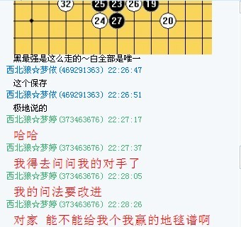
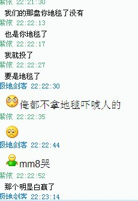
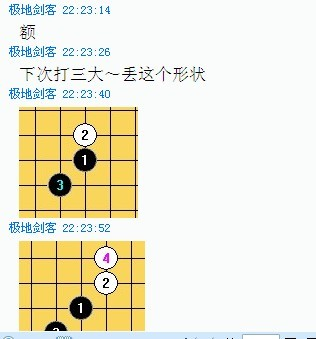
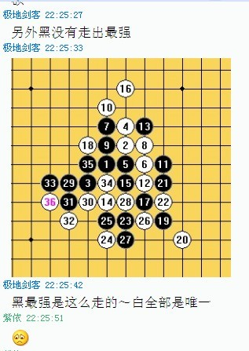

滑天下之大稽 不能再忍了
#1 滑天下之大稽 不能再忍了 作者：忧郁的双眼 发表时间：2012-6-15 18:12:11
滑天下之大稽 不能再忍了——裁判，请给我们队合理解释
请不明真相者闭嘴，也请稍知道些内幕者摸着良心来看待这件事。首先，从始至终，我都一句话不说，结果出来的时候，极地剑客判负，我沉默，因为这一切都是极地自找的，不找其他理由，当天我就在群里说了六个字：公开批评极地剑客！他也是一个P都不放，除了郁闷就是郁闷。请问裁判，你们判极地负的时候我说过什么没有？我们极地都群内表态了，第二阶段拿五分，来赎过！说风凉话的，我们是威逼了还是利诱了？这一切都是婷婷过意不去，她们队内自己商量认输的。
第一次更改结果，极地剑客胜了，我自然也不会站出来，我们是受益方，得了便宜还卖乖的事我不屑做，不过围观者的闲言碎语我都记在心里，这事你们居然拿现实比赛来讲，好，我也拿现实比赛来讲，当时的情况就是，梦依（还是梦啥）已经输给极地了，憨厚的极地，尽管你们可能不会认同憨厚二字，还是同意继续和小朋友们玩下去，反正自认为一分到手，所以他各种欢乐，有杀不杀，对手超时前还发小广告催，整个一个老好人典范。
尼玛没想到几天一过，你们再次更改结果，如果说第一次更改的争议是维持裁判的绝对权威的话，那么第二次更改又是什么东西？算什么意思？尼玛用一系列错误来弥补第一个错误？真以为我们不说话就是理亏？对方领队已经站出来说前面他们早就认输了，所以这一局无论判我们赢还是炮灰队赢都有道理，我半句话都不会多说。非典时抢醋，核辐射时抢盐，你们问过酱油的感受没有？尼玛难道说受益一方就是理亏方？太特么可笑了！我不知道裁判出于何种原因，迫于何方压力，第二次修改，我只知道，你站三尺讲台，红口白牙，小手一抖，鼠标一点，我们极地便有从蛟龙到神九再跌入海沟欲仙欲死的感觉，从头到尾，极地这娃除了在我们面前发发牢骚外再不多说一句。这一次更改结果他可以沉默，我得站出来，有什么问题，咱们当面锣对面鼓来敲敲打打，把头头道道摆清楚。
一个工作日以内，你们要么恢复原判（极地剑客胜），要么给予极地一分的补偿，没的商量。这一分说实话，我们不会在乎，因为对冠军争夺没影响，内幕大家都懂的，我就不点明了，这纯属是争一口气，失落刀原谅我的不给面子，这么多年的群友，我第一次跟你对着干，请理解。
#2 Re:滑天下之大稽 不能再忍了 作者：冰雪笑醉 发表时间：2012-6-15 18:19:58
 补偿啥好捏，威望，金币~
补偿啥好捏，威望，金币~
鸡帝神的粉丝路过~
#3 Re:滑天下之大稽 不能再忍了 作者：掌棋如烟 发表时间：2012-6-15 18:21:32
鸡帝神的粉丝路过~ +1
梦依他们队不是出来认输过了么,现在是虾米情况....
#4 Re:滑天下之大稽 不能再忍了 作者：梧桐风 发表时间：2012-6-15 18:22:06
支持楼主，希望裁判能做出公平公正公开的判断，裁判错了更应该发帖道歉，更不希望再次看到上次简单友谊队那样的结果～#5 Re:滑天下之大稽 不能再忍了 作者：三道 发表时间：2012-6-15 19:18:16
若有所指哦。。。。#6 Re:滑天下之大稽 不能再忍了 作者：浪人痴痴 发表时间：2012-6-15 19:29:58
必须给极地这厮的分补上，我还靠极地赢的。#7 Re:滑天下之大稽 不能再忍了 作者：小红眼镜 发表时间：2012-6-15 19:53:34
哇。极低MMM好可怜啊。。。过来慰问一下。#8 Re:滑天下之大稽 不能再忍了 作者：三道 发表时间：2012-6-15 20:42:28
河村博客里的美女，送给极低，安慰下。
［此帖子已被 三道 在 2012-6-15 20:43:37 编辑过］
#9 Re:三道【==Re:滑天下之大稽 不能再忍了==】 作者：梦婷 发表时间：2012-6-15 22:11:53
我来证明下，在梦依编辑帖子后，极地和梦依的棋属于交流棋，征得梦依的同意，我发一段梦依（Q名紫依）和极地的聊天记录～～
［ 黄药师 于 2012-6-15 22:13:53 时花20金币送鲜花一朵］
［ 黄药师 于 2012-6-15 22:13:53 时花20金币送鲜花一朵］
［ 黄药师 于 2012-6-15 22:13:53 时花20金币送鲜花一朵］
#10 Re:梦婷【==Re:三道【==Re:滑天下之大稽 不能再忍了==】==】 作者：梦婷 发表时间：2012-6-15 22:12:47
引用：
原文由 梦婷 发表于 2012-6-15 22:11:53 :我来证明下，在梦依编辑帖子后，极地和梦依的棋属于交流棋，征得梦依的同意，我发一段梦依（Q名紫依）和极地的聊天记录～～
#11 Re:梦婷【==Re:梦婷【==Re:三道【==Re:滑天下之大稽 不能再忍了==】==】==】 作者：梦婷 发表时间：2012-6-15 22:14:45
引用：   
原文由 梦婷 发表于 2012-6-15 22:12:47 :引用：
原文由 梦婷 发表于 2012-6-15 22:11:53 :我来证明下，在梦依编辑帖子后，极地和梦依的棋属于交流棋，征得梦依的同意，我发一段梦依（Q名紫依）和极地的聊天记录～～
#12 Re:滑天下之大稽 不能再忍了 作者：梦婷 发表时间：2012-6-15 22:26:18
唉～～不会上传图片 前面重复发了两个一样的，我只是想说明下，炮灰队是来虚心学习的，前面我们编辑帖子，其实裁判应该直接出来判负的，极地这娃好面子，不好意思找裁判 我们的小梦依又不想失去继续学习的机会，所以就直接找极地请教了，哈哈 还望裁判明鉴～～［ 小小亦默 于 2012-6-16 0:25:11 时花20金币送鲜花一朵］
#13 Re:滑天下之大稽 不能再忍了 作者：屏蔽 发表时间：2012-6-15 22:49:24
 坐等裁判第三次判决
坐等裁判第三次判决
#14 Re:滑天下之大稽 不能再忍了 作者：omnne 发表时间：2012-6-16 21:41:39
小眼睛算数真差，公开批评极地剑客怎么会是6个字呢？